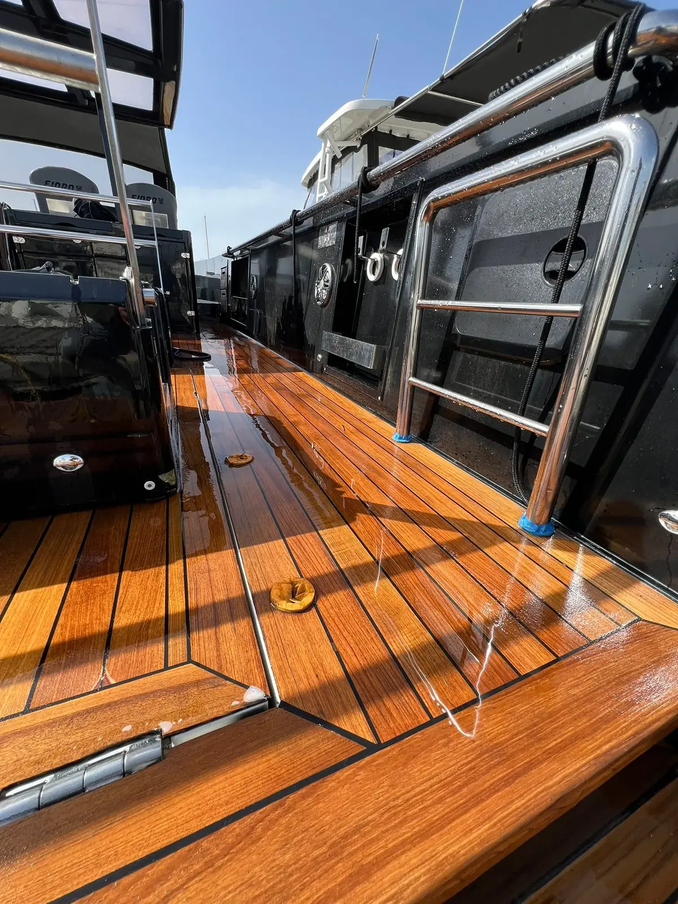

Pose de teck naturel sur yacht et bateau
Le bois noble par excellence. De la pose sur-mesure à l'entretien annuel et à la réparation, Prestige Nautic préserve l'élégance de votre pont en teck naturel — sur toute la Côte d'Azur.
Le teck naturel, un classique intemporel
Le teck naturel reste la référence absolue en matière de pont de plaisance. Son grain chaud, sa résistance naturelle aux huiles marines et sa durabilité légendaire en font le matériau de prédilection des constructeurs de yachts de prestige depuis des siècles.
Une pose de teck naturel bien réalisée, c'est un bateau qui prend instantanément de la valeur. Chaque lame est taillée sur mesure, posée à plat, calfatée à la main. Le résultat est un pont à la fois beau et fonctionnel, qui vieillira avec grâce si l'entretien est respecté — et c'est là que l'expertise de l'artisan fait toute la différence.
Aucun matériau ne reproduit fidèlement le grain, la chaleur et l'odeur du vrai teck. Un pont naturel sublime instantanément un bateau.
Un pont en teck naturel augmente significativement la valeur de revente. Référence dans l'univers du yachting haut de gamme.
Le teck naturel de qualité A (plantation certifiée) tient 20 à 30 ans avec un entretien adapté. Un investissement sur le long terme.
Nouvelle pose sur pont nu, remplacement de lames abîmées ou rénovation complète : nous adaptons l'intervention à l'état de votre teck.
Du devis à la livraison
La pose de teck naturel exige rigueur et patience. Chaque étape est maîtrisée pour garantir un résultat durable et irréprochable.
Inspection & devis personnalisé
Évaluation de l'état du pont existant, relevé des surfaces, choix du teck (épaisseur, provenance, certification FSC). Devis détaillé sans engagement.
Dépose et préparation du support
Retrait du teck ancien si nécessaire, ponçage du pont, rebouchage des trous de vis, traitement des zones dégradées. Le support doit être sain avant toute pose.
Découpe et ajustage des lames
Les lames de teck sont taillées sur mesure pour épouse parfaitement les formes du pont : baïonnettes, courbes, écoutilles et passages de câble.
Pose, vissage et calfatage
Fixation des lames (vis inox ou collage selon configuration), puis calfatage au mastic polyuréthane noir ou blanc dans les gorges. Technique traditionnelle pour une étanchéité parfaite.
Ponçage final & livraison
Ponçage de l'ensemble du pont pour un plan parfait, nettoyage et séchage. Le teck est livré prêt à l'emploi — vous n'avez plus qu'à naviguer.
Tout savoir sur le teck naturel
Quelle différence entre teck naturel et teck synthétique ?
Le teck naturel offre un cachet et une chaleur authentiques mais demande un entretien régulier ; le synthétique imite le bois sans entretien. Comparez en détail dans notre guide teck synthétique ou naturel.
Quel entretien demande un pont en teck naturel ?
Un nettoyage doux régulier dans le sens du fil, un dégrisage occasionnel et la reprise des joints quand c'est nécessaire. Bien entretenu, un pont teck conserve sa teinte et sa longévité.
Peut-on rénover un pont en teck existant ?
Souvent oui : ponçage, remplacement des lames abîmées, réfection des joints. Nous évaluons l'épaisseur de teck restante pour déterminer si une rénovation suffit ou si une repose est préférable.
Combien de temps dure un pont en teck naturel ?
Avec un entretien adapté, un pont en teck naturel de qualité dure de nombreuses années. Sa longévité dépend surtout de l'épaisseur des lames et de la régularité de l'entretien.
Le teck naturel chauffe-t-il au soleil ?
Comme tout bois, il chauffe moins qu'une surface sombre et reste agréable pieds nus. C'est l'un de ses atouts de confort sous le soleil de Méditerranée.
Intervenez-vous sur mon port ?
Basés à Toulon, nous intervenons sur toute la Côte d'Azur : Hyères, Bandol, Sanary, Saint-Tropez, Cannes, Antibes, Nice et Monaco.
Un projet de teck naturel sur la Côte d'Azur ?
Neuve pose ou rénovation, nous analysons votre pont et vous proposons la solution la plus adaptée. Devis détaillé offert.
Demander un devis gratuit